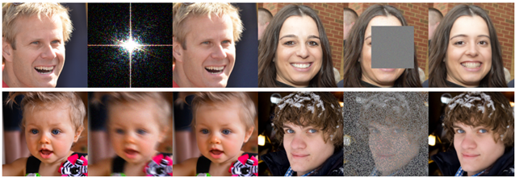
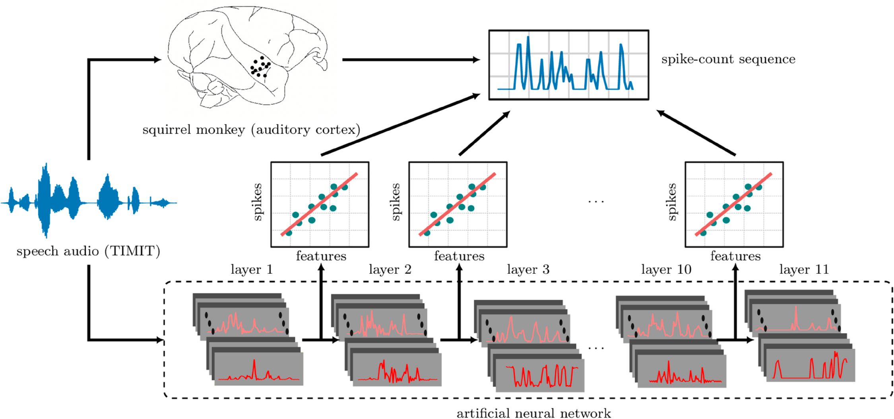

Solving Diffusion Inverse Problems with Restart Posterior Sampling
European Conference on Computer Vision (ECCV), 2026
A restart-based posterior sampler for linear and nonlinear inverse problems using pretrained diffusion models.
I’m a PhD candidate in Electrical & Computer Engineering at Purdue University, advised by Joseph Makin. My research has focused on using deep learning models to explain spiking activity in the auditory cortex and using generative diffusion models as priors for solving Bayesian inverse problems. Currently, I am working on using generative models like normalizing flows and flow matching for training efficient speech synthesis models that could be used for speech prostheses.
Before my PhD, I worked for approximately six years as an Instrumentation & Control Engineer. I received my B.S. in Electrical Engineering from UET Lahore, Pakistan.

European Conference on Computer Vision (ECCV), 2026
A restart-based posterior sampler for linear and nonlinear inverse problems using pretrained diffusion models.

PLOS Computational Biology, 2025
Using deep neural network representations to explain the spiking responses of individual auditory neurons.
Next: I plan to share small projects in AI systems, LLM pretraining, supervised fine-tuning (SFT), and reinforcement learning fine-tuning as I explore these areas.
Stanford · Ongoing volunteer teaching role in a free, open online course.
Graduate course, Purdue University.
Ying Shen (M.S., 2025): ASR models and Poisson encoding models of auditory cortex.
Brian Yuan (M.S., 2024): self-supervised speech representations for speech decoding.
I enjoy reading about investing, economics, and business, and playing cricket and badminton.